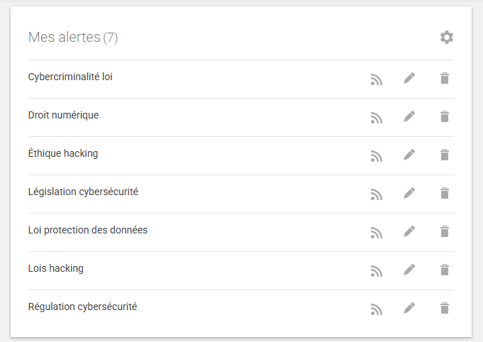
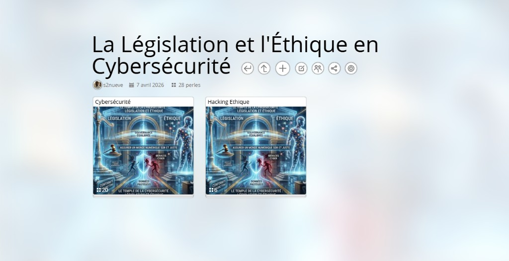

Sourakhata Sidibe
Je suis
À propos de moi
Je suis un étudiant passionné en BTS SIO (Services Informatiques aux Organisations), spécialisé en SISR (Solutions d'Infrastructure, Systèmes et Réseaux).
Mon objectif est de développer des compétences solides en administration des systèmes et des réseaux pour garantir la sécurité et les performances des infrastructures informatiques.
Actuellement en formation, je développe mes compétences en :
- Administration et maintenance des systèmes Windows Server et Linux
- Configuration et sécurisation des infrastructures réseau
- Déploiement de solutions de virtualisation et cloud computing
- Mise en place de stratégies de sécurité et de continuité d'activité
- Automatisation via scripting (PowerShell, Bash)
Mon CV
Consultez mon CV pour plus de détails sur mon parcours académique, mes compétences techniques, et mes expériences professionnelles.
Formation
BTS SIO - Option SISR
2024 - 2026Lycée René Descartes, Paris
BACCALAURÉAT PROFESSIONNEL SN INFORMATIQUE
De 2021 à 2024Lycée Louis Armand , 75015, Paris
Expérience
Stagiaire chez Sinatek Gaming
Septembre 2023 - octobre 2023Sinatek Gaming 75012, Paris
Compétences Clés
Mes Compétences
SysAdmin
Windows, Linux
Réseau
Cisco, VLAN, Routing
Sécurité
Firewall, VPN, Fail2Ban
Scripting
Python, Bash, PowerShell
Veille technologique
BTS SIO — Option SISR
🔒 La Législation et l'Éthique en Cybersécurité
La législation et l'éthique du numérique constituent l'ensemble des règles juridiques et des principes moraux encadrant la protection des systèmes d'information, des données et des utilisateurs.
6
Articles analysés
2
Outils de veille
2
Axes principaux
∞
Évolution continue
📖 Qu'est-ce que la veille technologique ?
La veille technologique est une démarche structurée visant à surveiller les innovations récentes et leur viabilité sur le marché. Elle repose sur un cycle précis de collecte, de conservation et d'étude de données, fonctionnant comme une revue de presse spécialisée au service de la stratégie technique.
Revue de presse — Articles analysés
Cliquez sur une carte pour afficher le résumé. Filtrez par thématique.
L'UE investit pour renforcer sa sécurité
Why the World Needs Hackers Now
Hacker ethic (Wikipedia)
La cybersécurité, priorité pour les dirigeants ?
Une cyberattaque sur quatre réussit en France
Mes outils de veille
Google Alerts
Surveillance automatique d'un mot-clé — reçoit des alertes e-mail dès qu'un sujet est mentionné

Pearltrees
Cartographie et classement des articles et références utiles pour la synthèse finale.

Conclusion de ma veille
Cette veille technologique met en lumière un tournant majeur : la cybersécurité n'est plus un simple défi technique, mais un enjeu de souveraineté législative et de changement culturel.
D'un côté, le cadre légal se durcit et s'organise. On observe une volonté forte, tant au niveau national qu'européen, de financer une filière de sécurité autonome et d'auditer les outils numériques communs pour garantir qu'aucune faille ne reste sans surveillance. La législation pousse désormais les entreprises à sortir de la passivité pour adopter une défense proactive et transparente.
D'un autre côté, le hacking éthique s'impose comme le partenaire indispensable de cette nouvelle stratégie. En réhabilitant l'éthique hacker basée sur le partage, l'ouverture et la créativité, les organisations apprennent à anticiper les menaces plutôt qu'à simplement les subir. L'expert en sécurité, capable de penser comme un attaquant, devient le garant de la résilience face à des menaces qui, bien que de plus en plus complexes, butent souvent sur le même maillon faible : l'humain.
En définitive, la réussite de la protection numérique de demain reposera sur cet équilibre : des lois protectrices qui encouragent l'innovation et une éthique de collaboration qui place l'intelligence humaine au centre de la défense.
Professionnalisation des attaques et exploitation constante des vulnérabilités humaines.
Renforcement de la souveraineté numérique et des cadres légaux de protection.
Synergie entre la rigueur de la loi et l'agilité créative du hacking éthique.